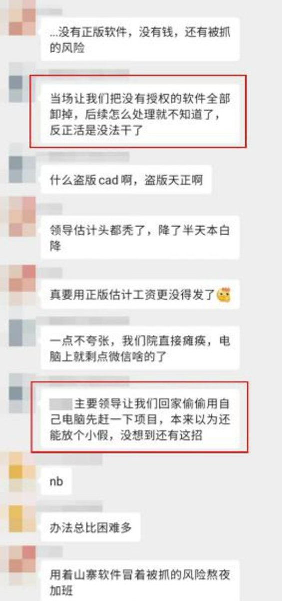
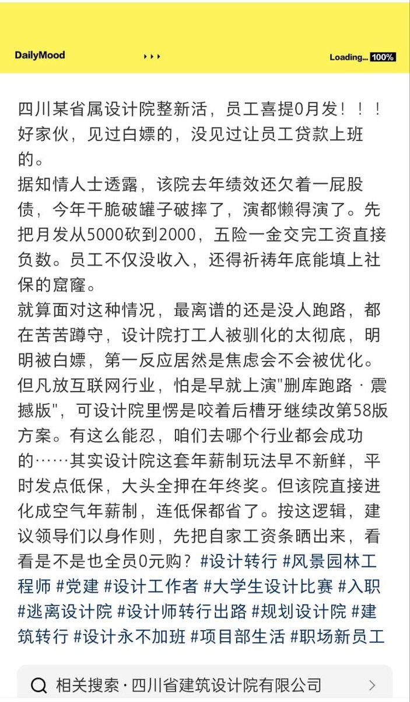
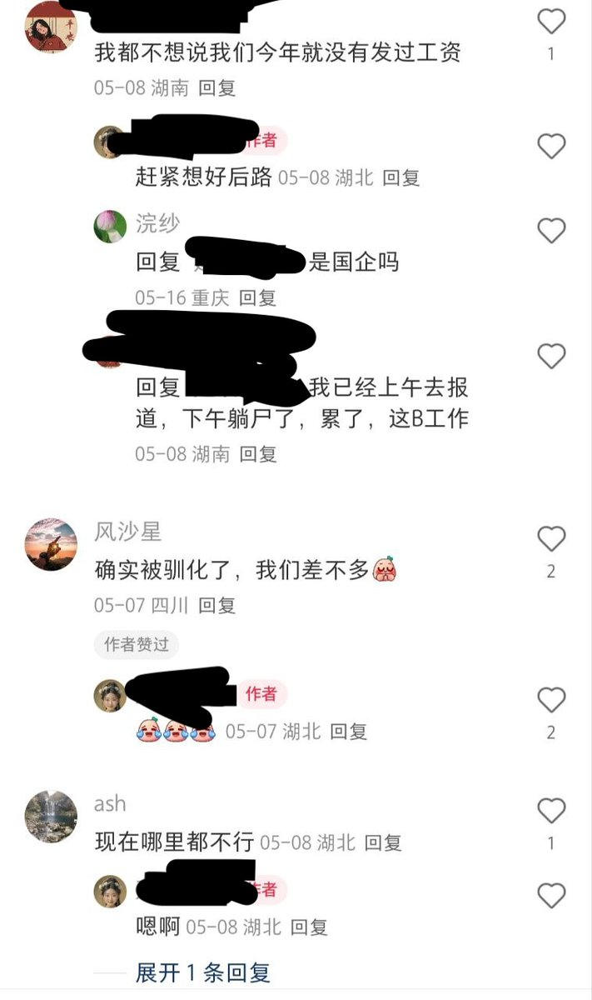

@whyyoutouzhele 怎么不学学隔壁设计院的呢。




6月1日 一博主吐槽四川某省属设计院员工喜提0月发!
见过白嫖的，没见过让员工贷款上班的。该院去年绩效还欠着，今年先把月发从5000砍到2000，五险一金交完工资直接负数。不仅没收入，还得祈祷年底能填上社保窟隆。
就算面对这种情况，最离谱的还是没人跑路，都在苦苦蹲守，设计院打工人被驯化的太彻底 https://t.co/G2Kt1Fk5t1
见过白嫖的，没见过让员工贷款上班的。该院去年绩效还欠着，今年先把月发从5000砍到2000，五险一金交完工资直接负数。不仅没收入，还得祈祷年底能填上社保窟隆。
就算面对这种情况，最离谱的还是没人跑路，都在苦苦蹲守，设计院打工人被驯化的太彻底 https://t.co/G2Kt1Fk5t1